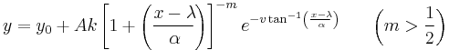
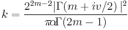

Contents |

wobei

Pearson Type IV Function.
Number: 6
Names: y0, A, m, v, alpha, lam
Meanings: y0=offset, A =area, m = unknown, v = unknown, alpha = x width, lam = x center
Lower Bounds: m > 0.5
Upper Bounds: none
y = nlf_pearsoniv(x, y0, A, m, v, alpha, lam)
FITFUNC\PEARSONIV.FDF
Peak Functions, Statistics